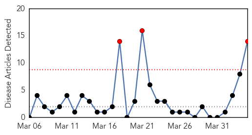
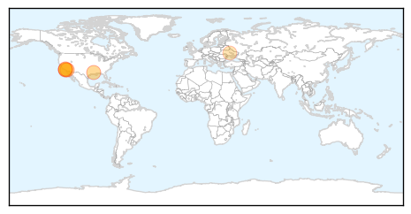
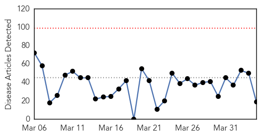
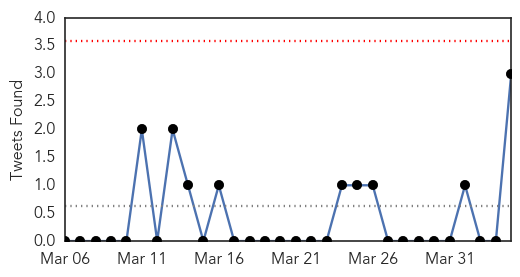
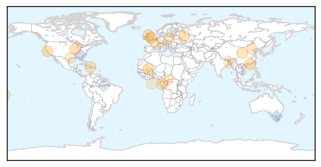

Meningitis
30-Day Web Trend
3 alerts, 0 warnings

30-Day Twitter Trend
1 alerts, 0 warnings

Article Locations
Article Confidences

Top Articles:
- 0.899
- Three Gay Men Die from Meningitis Disease in Southern California
- 0.854
- Officials urge gay Californians to faccinate following 3 meningitis deaths
- 0.793
- Los Angeles urges vaccines after gay men die of meningitis
- 0.735
- Meningitis Cases in Los Angeles Show Higher Risk in Gay Men
- 0.714
- Meningitis deaths bring warning for gay men
- 0.712
- Children to receive Meningitis B vaccine
- 0.712
- 3 gay men die of meningitis; L.A. County recommends vaccinations
- 0.710
- Three Los Angeles County Men Die due to Invasive Meningococcal Disease
- 0.684
- 3 meningitis deaths reported in Los Angeles county
- 0.676
- Deadly L.A.-area meningitis cases raise concerns in gay community
- 0.619
- Three die of meningitis outbreak in Los Angeles area
- 0.548
- Los Angeles County health agency failed to report meningococcal deaths of 3 men
- 0.543
- Three meningitis deaths reported in Los Angeles County; health officials urged gay men to be vaccinated
- 0.538
- 3 Meningitis Deaths
Top Tweets:
-
No tweets found for Apr 04, 2014
Unknown
30-Day Web Trend
0 alerts, 0 warnings

30-Day Twitter Trend
0 alerts, 0 warnings

Article Locations
Article Confidences

Top Articles:
- 0.922
- Scarlet fever cases rise to weekly high in England
- 0.917
- Chicago Tribune
- 0.902
- Man dies in France after contracting rabies
- 0.886
- Hong Kong Health Boss Suggests Live Poultry Ban for Bird Flu Control
- 0.866
- Calif. state senator indicted on corruption, gun trafficking charges
- 0.866
- Gazprom says Russian gas exports to Europe up 2.4 pct in Q1 y
- 0.814
- China facing increasing vector-borne disease risk
- 0.789
- Man dies in Paris after contracting rabies in Mali
- 0.780
- Health Protection Scotland probes scarlet fever outbreak
- 0.759
- Drought worsens food crisis in poverty-stricken Haiti - Haiti
- 0.714
- China facing increasing vector-borne disease risk
- 0.699
- Pink eye outbreak shuts schools in American Samoa
- 0.660
- Rabies kills man in France after visit to Mali
- 0.643
- Réformer l'UEM pour enrayer la montée de la pauvreté
- 0.626
- CDC warns of new risk related to e-cigarettes
- 0.586
- Health care in danger - Violent incidents affecting the delivery of health care, January 2012 to December 2013 - World
- 0.559
- UN warns of health crisis brewing in west Myanmar. Health. Tengrinews.kz
- 0.547
- Arakan govt say they can meet food, medicine needs- DVB Multimedia Group
- 0.533
- Poisoning Caused by E-Cigarettes on the Rise : Physical Wellness : Counsel & Heal
Top Tweets:
- 0.753
- Peak month” of flu activity is the month with the highest % of respiratory specimens testing positive for flu virus infection flufacts 33.747142 -84.387990 20140404 unkno 0 0.126720069527 @CDCFlu Atlanta GA FluFactFriday: Flu activity peaked in late December for the 2013-14 season and began a downward trend in early Jan. 20140404 unkno 0 0.0263720089942 @newprof1 All of these numbers are useful for policy changes. Until I'm a big fish. Then they are unfair!! 20140404 unkno 0 0.014929548196 @newprof1 Any HHMI rules about NIH grants while HHMI investigator? richgetricher 20140404 unkno 0 0.0114514066405 @newprof1 Jeremy Berg found that >80% who already get ~$650K a year in support from HHMI also get $ from NIH ~two grants each. http://t.co/nUgTDCk6tI
- 0.729
- Flu Fact Friday: Complications of the flu can lead to bacterial pneumonia ear infections sinus infections dehydration and worsening...
- 0.535
- Lunes 07 de abril es el Día Mundial de la Salud. Enfermedades transmitidas por vectores. Anopheles es el mosquito que transmite la malaria.